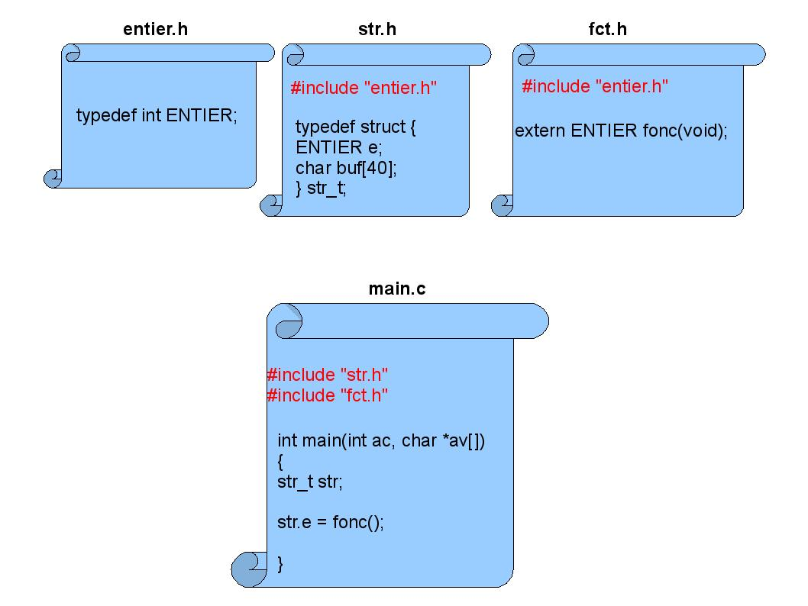
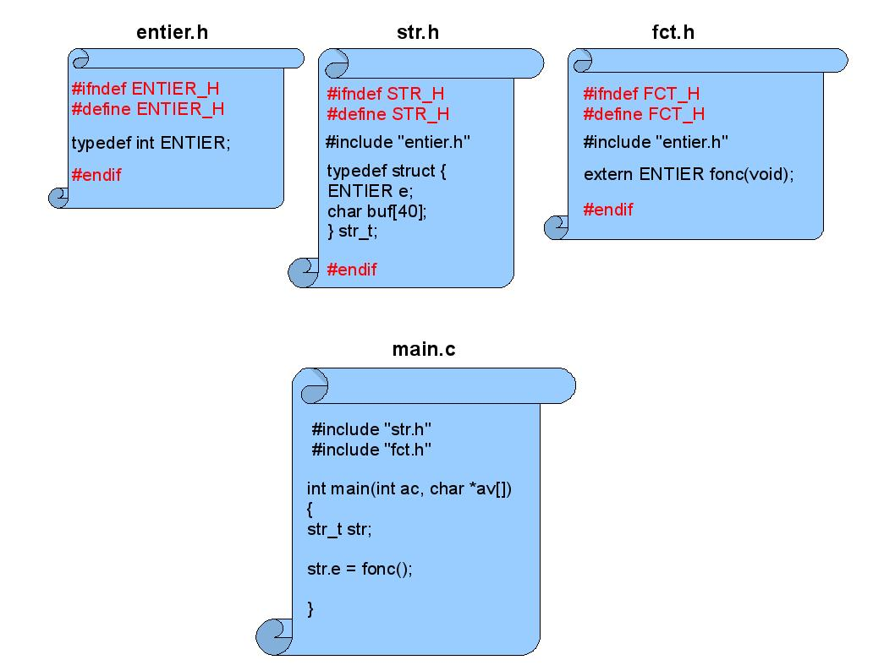

Mieux connaître et utiliser le préprocesseur du langage C
|
|
| |
|
|
En langage C, le « preprocessing » est l'étape préalable à la compilation. C'est un mécanisme puissant qui permet entre autres la compilation conditionnelle, l'inclusion de fichiers et la définition de macro-instructions. Bien que très simples au premier abord, ces facilités doivent être utilisées avec précautions pour éviter les erreurs de compilation ou pire, les dysfonctionnements des programmes. De plus, le préprocesseur de GCC recèle des fonctionnalités supplémentaires qui peuvent s'avérer très utiles.
Avant proposGrâce au macro processeur du langage C, il est possible de définir et utiliser des constantes de la manière suivante :
| 1 #include
<stdio.h> 2 3 #define CONSTANTE_1 (0x3d+20) 4 #define CONSTANTE_2 (0x3e+20) 5 #define CONSTANTE_3 (0x3f+20) 6 7 int main(int ac, char *av[]) 8 { 9 printf("%u\n", CONSTANTE_1); 10 printf("%u\n", CONSTANTE_2); 11 printf("%u\n", CONSTANTE_3); 12 } |
| >
gcc main.c main.c:10:18: erreur: suffixe « +20 » invalide pour une constante entière |
Le compilateur détecte une erreur à la ligne 10, colonne 18 c'est-à-dire au niveau de la macro CONSTANTE_2. Cela est une défaillance du compilateur qui croit avoir à faire à une constante entière dénotée par « 0x3 » avec un exposant positif dénoté par « e+20 » : 0x3 multiplié par 10 élevé à la puissance 20. Ce n'est pas une notation légale en langage C car les exposants ne sont pas autorisés pour les constantes hexadécimales. Pour se sortir de cette chausse-trappe, il faut réécrire CONSTANTE_2 en séparant « e » et « + » par un caractère espace :
| #define CONSTANTE_2 (0x3e + 20) |
Ainsi la compilation et l'exécution peuvent se réaliser :
| >
gcc main.c > ./a.out 81 82 83 |
Il est donc conseillé de systématiquement mettre un espace de part et d'autre des opérateurs « + » et « – » quand on définit une macro avec le chiffre hexadécimal « e ».
Il n'est pas recommandé de terminer une macro par un « ; » comme dans l'exemple suivant :
| 1
#define
ADD(a,
b)
a
+
b; 2 3 int main(int ac, char *av[]) 4 { 5 int r = ac; 6 7 if (r) 8 r = ADD(4, 5); 9 else 10 r = ADD(5, 6); 11 12 return 0; 13 } |
En effet, cela mène à une erreur de compilation :
| >
gcc main.c main.c: In function «main": main.c:9: erreur: expected expression before «else" |
La ligne 9 contient deux instructions du fait de l'ajout du « ; » derrière l'appel à ADD(). Le résultat du préprocesseur le montre bien :
| >
gcc -E main.c [...] if (r) r = 4 + 5;; else r = 5 + 6;; |
L'instruction else se retrouve orpheline car le if auquel elle est sensée se rapporter contient plus d'une instruction qui ne sont pas regroupées par des accolades : « r = 4 + 5; » et l'instruction vide « ; » .
Quand une macro contient plusieurs instructions comme par exemple :
| #define
ADD(a, b, c) \ printf("%d + %d ", a, b); \ c = a + b; \ printf("= %d\n", c); |
On peut se retrouver confronté à l'erreur de compilation évoquée au § 2 si elle est utilisée dans une instruction if car l'utilisateur de la macro peut ne pas mettre d'accolades de part et d'autre de l'appel. Ou alors la macro pouvait ne contenir à l'origine qu'une seule instruction et était logiquement utilisée dans les instructions if sans être entourée d'accolades mais une évolution du logiciel a rendu nécessaire l'ajout d'instructions supplémentaires dans celle-ci. Dans ce dernier cas, on risque d'introduire des dysfonctionnements sournois du logiciel si, par exemple, la macro est utilisée dans une instruction while sans accolades :
| #include
<stdio.h> #define ADD(a, b, c) \ printf("%d + %d ", a, b); \ c = a + b; \ printf("= %d\n", c); int main(int ac, char *av[]) { int i = 0; int r = 0; while (av[i++]) ADD(r, 1, r); return 0; } |
On s'attend à ce que toutes les instructions regroupées dans ADD() soient exécutées à chaque itérations de la boucle. Malheureusement, le préprocesseur va générer une suite d'instructions sans accolades donc à chaque itérations, seule la première instruction « printf("%d + %d ", a, b) » sera exécutée. Pour éviter ce genre d'erreurs, il est conseillé de regrouper les instructions dans un « do-while » non suivie de « ; » (règle du § 2) afin de faire apparaître la macro multi-instruction comme une seule instruction :
| #define
ADD(a, b, c) do
{ \ printf("%d + %d ", a, b); \ c = a + b; \ printf("= %d\n", c); \ } while(0) |
Le compilateur ne génèrera pas de boucle vu que la condition d'itération est toujours fausse : while(0). Il ne faut surtout pas se contenter d'accolades car on ferait apparaître le problème du § 2 si la macro était utilisée dans un « if-else » du fait du « ; » qui risque de suivre l'appel dans le corps du if. Avec la boucle non suivie de « ; », l'utilisateur est obligé de mettre un point virgule après l'appel à la macro sous peine d'erreur de compilation mais il n'aura qu'une instruction : la boucle « do-while ».
Considérons le petit programme suivant qui définit et utilise une macro effectuant une division entière :
| #include
<stdio.h> #define DIV(a, b, c) do { \ printf("%d / %d ", a, b); \ c = a / b; \ printf("= %d\n", c); \ } while(0) int main(int ac, char *av[]) { int r = 5; int v1 = 12; int v2 = 6; DIV(v1, v2, r); DIV(v1 + 6, v2, r); return 0; } |
A l'exécution on s'attend à l'affichage du résultat 2 pour la première division (12 / 6) et du résultat 3 pour la deuxième division ((12 + 6) / 6). Mais on obtient le résultat erroné suivant :
| >
./a.out 12 / 6 = 2 18 / 6 = 13 |
Comme d'habitude, lorsque l'on a un doute avec les macros, il faut visualiser la sortie du préprocesseur :
| int
main(int ac, char *av[]) { int r = 5; int v1 = 12; int v2 = 6; do { printf("%d / %d ", v1, v2); r = v1 / v2; printf("= %d\n", r); } while(0); do { printf("%d / %d ", v1 + 6, v2); r = v1 + 6 / v2; printf("= %d\n", r); } while(0); return 0; } |
On constate que l'on se retrouve confronté à un problème de priorité des opérateurs au niveau du deuxième appel à DIV(). En effet, dans l'expression « r = v1 + 6 / v2 », l'opérateur « / » est plus prioritaire que l'opérateur « + ». Le compilateur génère donc l'équivalent de l'opération mathématique « r = v1 + ( 6 / v2 ) ». D'où le résultat 13 quand v1 et v2 valent respectivement 12 et 6. La parade consiste à systématiquement parenthéser toutes les occurrences des paramètres dans une macro :
| #define
DIV(a, b, c) do { \ printf("%d / %d ", (a), (b)); \ (c) = (a) / (b); \ printf("= %d\n", (c)); \ } while(0) |
Le deuxième appel à DIV() dans le programme précédent donne maintenant le résultat correct en sortie du préprocesseur :
| do
{ printf("%d / %d ", (v1 + 6), (v2)); (r) = (v1 + 6) / (v2); printf("= %d\n", (r)); } while(0); |
Considérons la constante définie sous la forme de la macro CONSTANTE et utilisée comme suit :
| #include
<stdio.h> #define BASE 2000 #define CONSTANTE BASE + 2 int main(int ac, char *av[]) { printf("%d\n", CONSTANTE / 2); return 0; } |
L'affichage espéré est le résultat de l'opération « 2002 / 2 », soit 1001. Et pourtant on obtient 2001. La sortie du préprocesseur montre que le programme génère un problème de priorité des opérateurs comme on l'a vu au § 4 :
| printf("%d\n", 2000 + 2 / 2); |
D'une manière générale, si une macro consiste en une expression (constante, test, opérateur ternaire...), il est prudent de la parenthéser. D'où la correction de l'exemple :
| #define
BASE (2000)
#define CONSTANTE (BASE + 2) |
On a souvent tendance à utiliser une macro comme si c'était une fonction ou alors des évolutions de code peuvent mener au fait qu'une fonction deviennent une macro pour des raisons de lisibilité ou d'optimisation. Voici un exemple de programme qui définit et utilise la macro IS_BLANK(c) qui retourne vrai si le paramètre est un caractère blanc (espace ou tabulation) :
| #include
<stdio.h> #define IS_BLANK(c) ((c) == '\t' || (c) == ' ') int main(int ac, char *av[]) { char *p = av[0]; while(*p) { if (IS_BLANK(*(p++))) { printf("Blanc à l'indice %d\n", (p - 1) - av[0]); } } return 0; } |
Ce programme est sensé afficher les indices des caractères blancs dans son nom. Pourtant l'indice affiché est erroné ou certains blancs ne sont pas détectés :
| >
gcc main.c -o "nom avec espaces" > ./nom\ avec\ espaces Blanc à l'indice 5 |
Le seul blanc détecté est indiqué à l'indice 5 alors que dans la chaîne de caractères « ./nom avec espaces », il y a des blancs aux indices 5 et 10. Ceci est du au fait que le paramètre c est évalué deux fois dans la macro IS_BLANK() : la première fois pour être comparé à '\t' et la seconde pour être comparé à ' '. Or, le programme passe *(p++) à la macro. Ce qui donne en sortie du préprocesseur :
| if (((*(p++)) == '\t' || (*(p++)) == ' ')) |
En d'autres termes, la première comparaison se fait avec le caractère pointé par p, p étant ensuite incrémenté (post-incrémentation), la seconde comparaison se fait avec le caractère suivant. En retour de macro, p est de nouveau incrémenté. La bonne écriture pour le programme est donc d'éviter de passer une expression en paramètre de la macro :
| #include
<stdio.h> #define IS_BLANK(c) ((c) == '\t' || (c) == ' ') int main(int ac, char *av[]) { char *p = av[0]; while(*p) { if (IS_BLANK(*p)) { printf("Blanc à l'indice %d\n", p - av[0]); } p ++; } return 0; } |
Il n'est pas toujours évident de respecter cette règle surtout si IS_BLANK() était une fonction et après évolution du code source, la fonction est devenue une macro. En effet, une telle modification implique qu'une revue complète du code soit faite. Ce n'est pas facile voire impossible si la macro est définie dans un fichier d'entête qui est déjà utilisé dans nombre de programmes à travers le monde.
Une extension spécifique à GCC, donc pas forcément conforme à l'ANSI C, offre l'opportunité de transformer des blocs d'instructions (instructions encadrées par des accolades) en expression (cf. [1]). Comme il est par ailleurs possible de déclarer des variables locales à un bloc, la macro IS_BLANK() peut être réécrite comme suit :
| #include
<stdio.h> #define IS_BLANK(c) ({char _c = c; ((_c) == '\t' || (_c) == ' ');}) int main(int ac, char *av[]) { char *p = av[0]; while(*p) { if (IS_BLANK(*(p++))) { printf("Blanc à l'indice %d\n", (p - 1) - av[0]); } } return 0; } |
La variable locale _c a été définie à l'intérieur du bloc de la macro pour stocker la valeur du paramètre. Ainsi, ce dernier n'est évalué plus qu'une seule fois : au moment de l'affectation de la variable locale.
La norme ISO C99 permet de définir des macros avec un nombre variable d'arguments. Il existe deux notations :
| 1
#include <stdio.h> 2 3 #define DEBUG(fmt, ...) \ 4 fprintf(stderr, fmt "\n", __LINE__, __VA_ARGS__) 5 6 #define DEBUG2(fmt, args...) \ 7 fprintf(stderr, fmt "\n", __LINE__, args) 8 9 int main(int ac, char *av[]) 10 { 11 DEBUG("Nom du programme = %s", av[0]); 12 DEBUG("Message sans arguments"); 13 14 DEBUG2("Nom du programme = %s", av[0]); 15 DEBUG2("Message sans arguments"); 16 17 return 0; 18 } |
DEBUG() et DEBUG2() sont des surcharges de la fonction fprintf() pour afficher un message d'erreur formaté. Le paramètre fmt concaténé à des chaînes de caractères est le format passé en premier argument de la fonction d'affichage. Les notations __VA_ARGS__ ou « args » représentent tous les arguments en nombre variable avec les virgules qui les séparent. La seconde notation est souvent préférée à la première dans la mesure où elle permet de nommer les arguments (par exemple ici avec args) au lieu d'utiliser l'identifiant générique __VA_ARGS__. La seconde notation était d'ailleurs spécifique à GCC avant que les macros à nombre variable d'arguments ne soient normalisées. Sur d'anciennes versions de GCC, c'est donc la seule notation supportée.
Bien que très pratique, ces écritures présentent un inconvénient de taille : elles n'autorisent pas l'appel sans arguments. Voici le résultat de la compilation suivie de la sortie du préprocesseur pour le programme précédent :
| >
gcc main.c main.c: In function «main": main.c:12: erreur: expected expression before «)" token main.c:15: erreur: expected expression before «)" token > gcc -E main.c [...] int main(int ac, char *av[]) { fprintf(stderr, "Nom du programme = %s" "\n", 11, av[0]); fprintf(stderr, "Message sans arguments" "\n", 12, ); fprintf(stderr, "Nom du programme = %s" "\n", 14, av[0]); fprintf(stderr, "Message sans arguments" "\n", 15, ); return 0; } |
Les erreurs de compilation viennent de la virgule qui précède la liste vide des arguments variables au deuxième et quatrième appel à fprintf(). GCC propose une extension très utile à travers la notation « ## » pour supprimer la virgule quand la liste des arguments qui la succède est vide. D'où la réécriture suivante des macros :
| #define
DEBUG(fmt, ...) \ fprintf(stderr, fmt "\n", __LINE__, ## __VA_ARGS__) #define DEBUG2(fmt, args...) \ fprintf(stderr, fmt "\n", __LINE__, ## args) |
Il existe de nombreuses macros et notations ayant un rôle particulier pour le préprocesseur. Dans ce paragraphe, seuls sont cités les plus utiles ou tout au moins les plus usitées.
La macro __GNUC__ est toujours définie lorsqu'on utilise la chaîne de compilation GCC. C'est donc conseillé pour faire de la compilation conditionnelle quand un programme utilise des extensions spécifiques à GCC mais qui est susceptible d'être compilé par d'autres chaînes de compilation (cf. § 9 pour un exemple d'utilisation).
Les macros __LINE__, __FILE__ et __FUNCTION__ sont respectivement remplacées par le numéro de ligne, le nom de fichier et le nom de la fonction dans lesquelles elles apparaîssent. Ces facilités sont en général utilisées pour la génération de traces et d'erreurs pour aider à la mise au point. Pour illustrer, voici un petit programme affichant ses arguments à l'aide de la macro DEBUG() dont la valeur ajoutée est d'imprimer le nom de fichier, le nom de la fonction et le numéro de ligne d'où elle est appelée :
| #include
<stdio.h> #define DEBUG(fmt, args...) \ fprintf(stderr, "%s(%s)#%d : " fmt , \ __FILE__, __FUNCTION__, __LINE__, ## args) int main(int ac, char *av[]) { int i; for (i = 0; i < ac; i ++) { DEBUG("Param %d is : %s\n", i, av[i]); } return 0; } [...] > gcc debug.c > ./a.out param1 param2 debug.c(main)#14 : Param 0 is : ./a.out debug.c(main)#14 : Param 1 is : param1 debug.c(main)#14 : Param 2 is : param2 |
On notera que __FUNCTION__ est spécifique à GCC. Le standard C est arrivé après avec la définition __func__. Bien que donnant un résultat identique, ces deux notations avait une différence de taille : la première s'expansait en une chaîne de caractères constante tandis que l'autre se comportait comme si en début de chaque fonction, un tableau local de nom « __func__ » était défini et initialisé avec la chaîne de caractères constante qui contient le nom de la fonction. Donc d'un coté, on avait une constante qui pouvait être concaténée au moment de la compilation à d'autres chaînes de caractères alors que de l'autre on avait une variable. Mais depuis la version 3.4 du compilateur GCC, ces deux notations sont identiques et se comportent toutes deux comme des variables.
La notation « # » permet de convertir un paramètre de macro en chaîne de caractères. Par exemple, voici une fonction qui affiche un numéro de signal Linux gràce à la macro CASE_SIG() :
| #include
<stdio.h> #include <signal.h> #include <stdlib.h> #define CASE_SIG(s) case (s) : printf("%s\n", "SIGNAL_" #s); break void signum(int sig) { switch(sig) { CASE_SIG(SIGINT); CASE_SIG(SIGTERM); CASE_SIG(SIGKILL); CASE_SIG(SIGTRAP); CASE_SIG(SIGSEGV); CASE_SIG(SIGCHLD); [...] default : printf("???\n"); } } int main(int ac, char *av[]) { if (ac > 1) { signum(atoi(av[1])); } } [...] > gcc signal.c > ./a.out 5 SIGNAL_SIGTRAP |
On a déjà eu une forme d'utilisation de « ## » dans le § 7. Mais il existe une autre forme d'utilisation où cette directive concatène les éléments lexicaux qui l'entourent pour former une nouvelle unité lexicale. Dans l'exemple suivant les mots CONSTA et NTE sont concaténés pour former le nom CONSTANTE qui s'avère être une macro définissant la constante 233 :
| #include
<stdio.h> #define CONSTANTE 233 #define CONCAT(a, b) a##b int main(int ac, char *av[]) { printf("%d\n", CONCAT(CONSTA, NTE)); } [...] > gcc concat.c > ./a.out 233 |
Les attributs sont des extensions spécifiques à GCC pour augmenter les contrôles et contribuer à l'optimisation du code généré. Considérons l'exemple suivant où est décrit l'attribut « format » (pour de plus amples informations sur les attributs de GCC, cf. [4]). funct() fait appel à deux fonctions effectuant de l'affichage formaté à la manière de printf() : le premier paramètre contient une description du format d'une chaîne de caractères et la liste variable des paramètres qui suivent est utilisée pour construire la chaîne à afficher. A l'appel de ces fonctions d'affichage, il y a une erreur classique de programmation : le format nécessite l'adresse d'une chaîne de caractères et un entier signé mais la liste des aguments ne contient qu'un entier signé.
| 1
extern void my_printf1 (const char *fmt, ...); 2 3 extern void my_printf2 (const char *fmt, ...) 4 __attribute__ ((format (printf, 1, 2))); 5 6 7 void funct(void) 8 { 9 my_printf1("Affichage de %s suivi de %d\n", 46); 10 11 my_printf2("Affichage de %s suivi de %d\n", 46); 12 } |
La compilation de ce programme avec l'option -Wall va signaler l'erreur de programmation (sous la forme d'un « warning ») pour la ligne 11 mais pas pour la ligne 9. En effet, en ligne 11, on utilise la fonction my_printf2() qui est définie avec l'attribut format pour indiquer que c'est une fonction « printf-like » qui utilise un format en argument 1 et que la liste variable des arguments commence au deuxième paramètre :
| >
gcc -c -Wall attribute.c attribute.c: In function «funct": attribute.c:11: attention : format «%s" expects type «char *", but argument 2 has type «int" attribute.c:11: attention : trop peu d'arguments dans le format |
Si la notion d'attribut est pratique et puissante, elle peut poser problème lorsque le compilateur utilisé n'est pas GCC. Comme la directive __attribute__ est définie avec un seul paramètre (d'où le double parenthésage lorsqu'on lui passe plusieurs paramètres de sorte à ce qu'ils n'apparaîssent que sous la forme d'un seul), il est possible d'utiliser le principe de la compilation conditionnelle pour redéfinir __attribute__ à rien lorsque le compilateur utilisé n'est pas GCC :
| #ifndef
__GNUC__ #define __attribute__(p) // Rien #endif // __GNUC__ |
Dans cet exemple, la condition de compilation utilise le drapeau __GNUC__ qui n'est défini par défaut que lorsque GCC est utilisé (cf. § 8.1).
Un fichier d'entête est inclus dans un fichier source à l'aide de la directive « #include ». Ces fichiers contiennent la plupart du temps des déclarations externes de variables ou fonctions, des définitions de types et de macros. Un fichier d'entête peut lui-même inclure d'autres fichiers d'entête car une règle de base en programmation C est de rendre un fichier d'entête indépendant. En d'autres termes, si un fichier d'entête utilise un type, une macro, une fonction ou une variable, il est recommandé que soit inclus dans ce fichier, le fichier d'entête où se trouve la définition correspondante. Dans l'exemple de la figure 1, le fichier main.c inclut les fichiers d'entête str.h et fct.h qui définissent respectivement le type str_t et la fonction fonc(). Ces deux derniers incluent le fichier entier.h pour la définition du type ENTIER.
Figure 1 : Inclusions multiples

La compilation de main.c donne les erreurs suivantes :
| >
gcc -c main.c In file included from fct.h:1, from main.c:2: entier.h:1: erreur: redefinition of typedef «ENTIER" entier.h:1: erreur: previous declaration of «ENTIER" was here |
Le compilateur remonte le fait que le type ENTIER est défini deux fois. La première définition provient du fichier str.h et la seconde du fichier fct.h qui incluent tout deux le fichier entier.h. Cela donne comme résultat que le fichier main.c inclut le fichier entier.h deux fois. Pour résoudre ce problème on peut utiliser la compilation conditionnelle de sorte à inclure un fichier d'entête seulement si une définition qui lui est propre n'est pas déjà définie. Cette définition est généralement faite à partir du nom du fichier. Afin d'illustrer le propos, voici comment le fichier entier.h est modifié pour être inclus qu'à la condition que ENTIER_H ne soit pas déjà défini :
| #ifndef
ENTIER_H #define ENTIER_H typedef int ENTIER; #endif // ENTIER_H |
Cela permet de compiler main.c car ENTIER_H est défini par l'inclusion de entier.h dans str.h et cela va donc empêcher la deuxième inclusion de entier.h via fct.h. D'une manière générale, il est conseillé d'appliquer le principe de l'inclusion conditionnelle à tout fichier d'entête. La figure 2 est une version revue et corrigée de la figure 1 à laquelle a été appliqué ce principe.
Figure 2 : Inclusions conditionnelles

Cet article a présenté de nombreuses règles et astuces pour tirer parti au mieux des facilités du préprocesseur C de sorte à contribuer à la robustesse, la portabilité et la facilité de mise au point des programmes. Ce ne sont là qu'un sous-ensemble des possibilités offertes. Le lecteur pourra consulter les liens et références de cet article pour aller plus loin.
[1] Extensions de GCC : http://sunsite.ualberta.ca/Documentation/Gnu/gcc-2.95.2/html_chapter/gcc_4.html
[2] Le préprocesseur C : http://www.game-lab.com/index.php?section=tutorials§ion_id=1&p=tutorial&action=showtut&id=221
[3] Le préprocesseur C : http://www.redhat.com/docs/manuals/enterprise/RHEL-4-Manual/cpp/index.html
[4] Attributs de GCC : http://www.unixwiz.net/techtips/gnu-c-attributes.html
[5] Manuels de GCC : http://gcc.gnu.org/onlinedocs/
[6] Boulay (Nicolas), « Le C n'est pas portable », GLMF 102, Février 2008
[7] Boulay (Nicolas), « Le processus de compilation C », GLMF 103, Mars 2008
[8] Kernighan, Brian.W. & Ritchie, Dennis.M., « Le langage C », 2ème édition, Masson, 1990
|
|